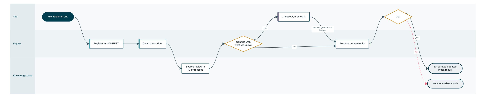

Knowledge and context
How knowledge gets in, how it is curated, and how the council fetches it before asking you anything.
On this page
Knowledge base
Four layers under context/. Knowledge moves left to right, and agents read curated truth first.
What keeps it trustworthy
| Mechanism | What it does |
|---|---|
| Source manifest | Every source gets an ID, and every curated fact cites one |
| Authority and volatility | Each file says how authoritative it is and how often it should change. The index flags files past review |
| Conflict questions | Two files that disagree stop the work. You choose, and the choice goes to the decisions ledger |
| Open items register | One home for every unresolved question, with an owner |
| Self-building index | Rebuilt at session start and after every edit, so nothing is invisible |
How knowledge gets in
From a raw file to curated truth. Scroll sideways on a small screen.

/ingest never changes curated truth without your go, and every conflict you settle goes to the decisions ledger so it is never asked again.The scout runs first, and alone
How the council fetches context before anyone else speaks.
- The orchestrator states which facts the decision needs
context-scoutruns by itself and returns a Context Pack with a coverage verdict- The orchestrator gates it: sends a thin pack back once, and asks you about any conflict the decision depends on before a panel runs
- The orchestrator writes the panel brief from the pack, naming the gaps so no panel assumes them
- Panels run in parallel with each other, on that one brief
- Citations are checked, then the options and the recommendation are written
A panel briefed before the facts arrive fills the gap with a guess, and a guess with a citation attached is worse than silence. A conflict the gate finds goes into the intake questions, so you hear one set of questions, not two.
Context before questions
The council never asks you something it already knows. Before any question, the scout looks up everything your request names: features, personas, teams, systems, partners, districts, terms and figures, in the knowledge base, past sessions and analysis documents. For each intake topic it reports answered, partial or not in context.
| Context says | What you see |
|---|---|
| Answered | Not asked. Shown under "What I already know" with its source, so you can correct it |
| Partial | A question for the missing piece only, quoting what is known |
| Not in context | A full question with a default |
The panels' questions and figures go through the same check before reply 2. A figure the context holds is used, never requested. When your answer names something new, it is looked up before the next round.
New context from the chat
When you say something the knowledge base does not hold, the council asks once where it goes.
| Choice | Where it goes |
|---|---|
| 1. This analysis only | The session file and the analysis document. The knowledge base does not change |
| 2. Key fact | A number, date, name or status, in the curated key facts |
| 3. Rule | A business, policy or compliance rule, in the curated topic file it belongs to |
| 4. Background context | A process, pain point or driver, in the curated topic or theme file |